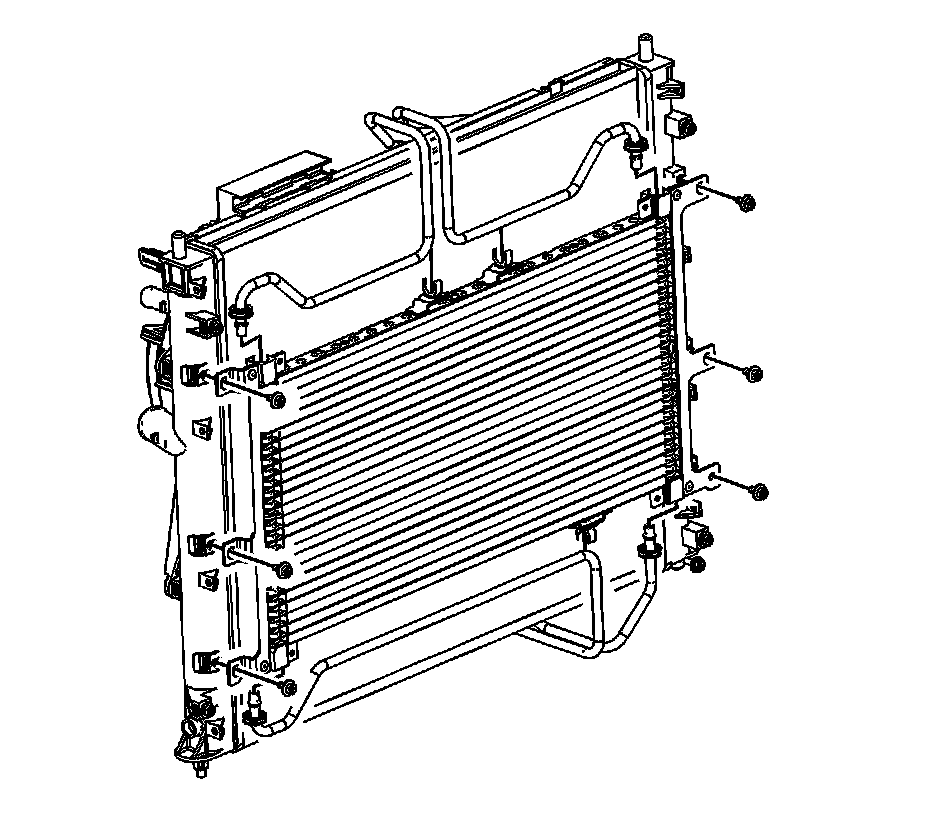
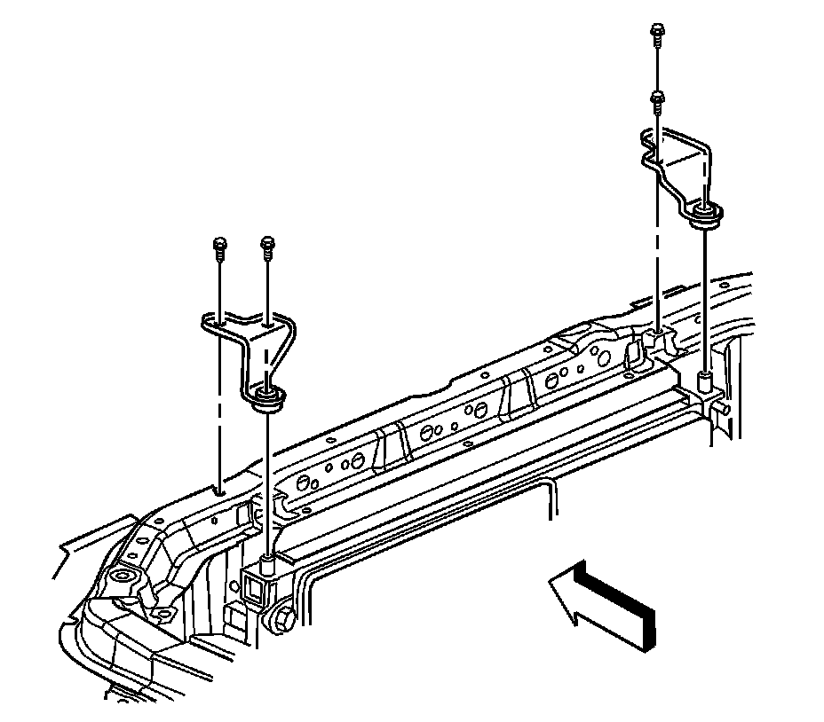

Transmission Fluid Cooler Pipe Replacement - Front
Transmission Fluid Cooler Pipe Replacement - Front
Tools Required
J 44827 Transmission Cooler Quick Connect
Removal Procedure

Important: It is not necessary to discharge the refrigerant from the air conditioning (A/C) system during auxiliary transmission oil cooler (TOC) front line replacement. Remove the A/C condenser mounting bolts and reposition the condenser.
1. Reposition the condenser to access the transmission oil cooler lines. Refer to Condenser Replacement (Heavy Duty Cooling) (Condenser Replacement (Heavy Duty Cooling))Condenser Replacement (Standard Cooling) (Condenser Replacement (Standard Cooling)) .
2. Using the J 44827 , disconnect the TOC lines from the TOC .
3. Remove the bolt that connects the TOC line to the cooling fan shroud.

4. Remove the radiator support bracket bolts.
5. Using the J 44827 , disconnect the front TOC line from the rear TOC line.
6. Using the J 44827 , disconnect the front TOC line from the radiator.
7. Position the radiator rearward to remove the front TOC lines.
Installation Procedure
1. Install the front TOC lines.
2. Connect the front TOC line to the rear TOC line.
3. Connect the front TOC line to the radiator.
4. Connect the TOC lines to the transmission oil cooler.
5. Reposition the radiator.
Notice: Refer to Fastener Notice (Fastener Notice) .
6. Install the bolts that secure the radiator support brackets.
Tighten the bolt to 9 N.m (80 lb in).
7. Install the bolts that secure the TOC line to the cooling fan shroud.
Tighten the bolt to 6.5 N.m (58 lb in).
8. Reposition and reinstall the condenser. Refer to Condenser Replacement (Heavy Duty Cooling) (Condenser Replacement (Heavy Duty Cooling))Condenser Replacement (Standard Cooling) (Condenser Replacement (Standard Cooling)) .